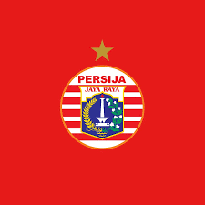

Lionel Messi
Career : Argentina Team, Newell's Old Boys, FC Barcelona, Paris Saint Germain

Cristiano Ronaldo
Career : Portugal Team, Sporting Lisbon, Manchester United, CF Real Madrid, Juventus, Al-Nassr

Neymar da Silva Santos Jr.
Career : Brazil Team, Santos FC, FC Barcelona, Paris Saint Germain
PERSIB BANDUNG
Persib adalah klub sepak bola Indonesia yang berbasis di Kota Bandung, Jawa Barat. Klub ini mulai berdiri pada 14 Maret 1933. Persib saat ini bermain di Liga 1 Indonesia. Julukan mereka adalah Maung Bandung dan Pangeran Biru. Tidak seperti banyak klub sepak bola lainnya, para pendukung memiliki dan mengoperasikan Bandung.
PERSIJA JAKARTA
Didirikan pada tahun 1902 sebagai Madrid Football Club, secara tradisional mengenakan kostum kandang putih. Kata Real ("dari kerajaan") Spanyol dan dianugerahkan ke klub oleh Raja Alfonso XIII pada tahun 1920 bersama-sama dengan mahkota kerajaan di lambang klub.
